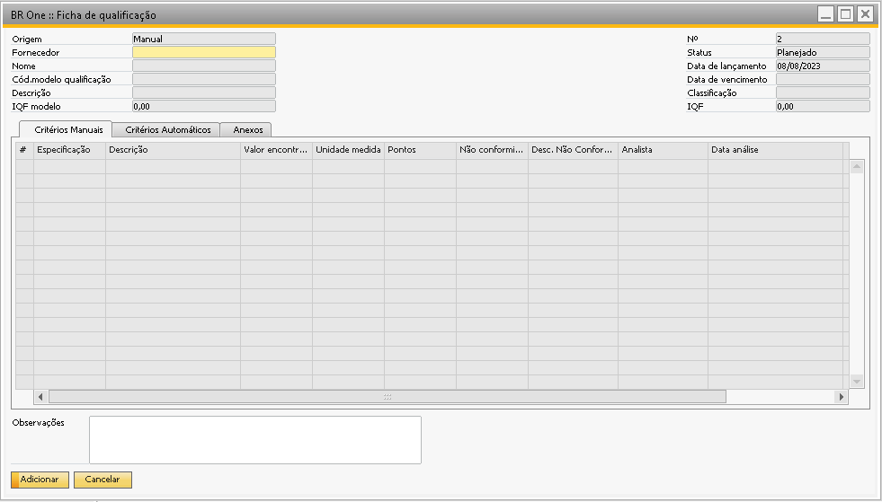
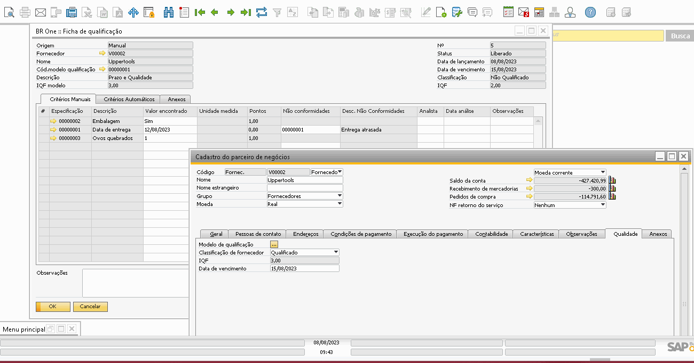
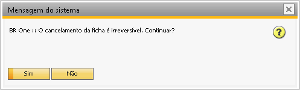
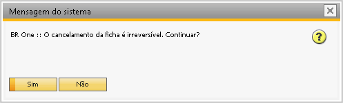

Ficha de Qualificação
Para acessar a tela de Ficha de qualificação, é necessatio ir ao menu:
Qualidade -> Ficha de qualificação
As fichas podem ser criadas tanto manualmente quanto pelo assistente de geração de ficha de qualificação.

Um fornecedor só poderá ser selecionado se ele possuir o campo Modelo de classificação preenchido em seu cadastro, se ele estiver ativo e se ele não possuir uma ficha planejada ou liberada.
Ao preencher o fornecedor será carregado o modelo padrão vinculado à ele e os dados do modelo no cabeçalho e na grid, mas o modelo de qualificação pode ser alterado manualmente com qualquer modelo vinculado ao cadastro do fornecedor no cabeçalho da ficha.
{kind=link}
Após inserir a ficha, ela pode ser liberada para ser preenchida. Ao liberar a ficha de qualificação o campo de Cód. Modelo qualificação ficará bloqueado não permitindo alteração.

No campo Valor encontrado deve ser informado o valor da especificação de acordo com o seu tipo. Caso a especificação tenha o tipo de resultado Intervalo (Numérico ou Data), o valor/data a ser considerado para os pontos será o valor dentro do valor mínimo e valor máximo.
No exemplo abaixo é possível notar que a especificação Data de entrega é do tipo Intervalo de datas, e no modelo de qualificação foi especificado o intervalo de datas entre 06/08/2023 a 10/08/2023, isso significa que se o valor encontrado na ficha de qualificação estiver dentro deste range de datas o ponto para esta especificação será considerado, caso a data estiver fora do intervalo especificado significa que a especificação está em não conformidade e a linha da especificação não pontuará.
No caso do print abaixo o valor aceito era a data de entrega até 10/08/2023, como o valor encontrado foi 12/08/2023 (fora do intervalo definido) esta especificação não pontuou, levando para a coluna Pontos o valor 0.


Já a especificação Ovos quebrados que também possui o tipo de resultado como intervalo definiu que para pontuar o valor esperado deve estar entre 0 e 3, como o resultado esperado na ficha de qualificação foi preenchido como 1 que está dentro do resultado esperado esta linha da especificação foi pontuada com a numeração de peso definida no modelo.

Para o tipo de resultado Fixo (Numérico, Data ou Sim/Não), que é o caso da especificação Embalagem, o valor encontrado deve ser exatamente igual ao valor esperado no modelo, para os pontos serem considerados.

Na aba Critérios Automáticos, há o botão Executar critérios.

Ele executa a function F_Br1_QualifFornec_CalcValEsp com os parâmetros Fornecedor e ID da Especificação.
Ao clicar no botão, será executada a função e retornado na coluna Valor encontrado os resultados.
Caso a execução dos critérios automáticos seja feita e não seja encontrado o ID na procedure, o resultado será vazio e a seguinte mensagem será exibida:

BR One :: O(s) ID(s) “x” da(s) linha(s) “x” não foi(ram) encontrado(s) na função que calcula os valores esperados.
Os resultados encontrados precisam seguir o tipo de dado definido na especificação, então por exemplo, uma especificação onde o tipo de dado é Data, precisa ter o resultado preenchido como data. Caso o tipo de dado seja numérico o sistema não aceitará um preenchimento do tipo Data.
Quando for retornado vazio, é porque não foi encontrado o ID na function, então, o valor do ponto será 0, pois a linha não foi aprovada.
O campo IQF será utilizado para classificar o fornecedor como Qualificado e Não Qualificado:
Ele será Qualificado quando o IQF for maior ou igual ao IQF modelo.
Ele será Não Qualificado quando o IQF for menor que o IQF modelo.
Notem o exemplo abaixo, o IQF do Modelo é 3, isso é, o fornecedor precisa ter ao menos 3 pontos para ser aprovado, no entanto a soma dos pontos na ficha foi 2, desta forma a Classificação foi definida como Não Qualificado.

Ao fechar a ficha, os campos Classificação de fornecedor, IQF e Data de vencimento serão atualizados no cadastro de parceiro de negócios.
{kind=link}
Ao clicar no menu Fechar do botão direito, a seguinte mensagem será exibida:


BR One :: O fechamento da ficha é irreversível. Continuar?
Ao clicar em Sim, será feita uma validação se todas as linhas da coluna Valor encontrado estão preenchidas. Se sim, a ficha será fechada. Se não, ela não será fechada e a seguinte mensagem será exibida:

BR One :: Não é permitido fechar a ficha se houver linha(s) com o campo Valor encontrado vazio(s) nas abas de critérios.*
A ficha também poderá ser cancelada. Basta clicar na opção Cancelar do botão direito e a seguinte mensagem será exibida:
 

{kind=link}
BR One :: O cancelamento da ficha é irreversível. Continuar?
Ao clicar em Sim, a ficha será cancelada. Ao clicar em Não, nada acontecerá.
A ficha também poderá ser duplicada. Para isso é necessário que o status dela esteja Fechada, e não tenha nenhuma ficha em aberto para o fornecedor. Para duplicar é necessário que não exista nenhuma ficha em aberto para o fornecedor. Basta clicar na opção Duplicar do botão direito e a seguinte mensagem será exibida: